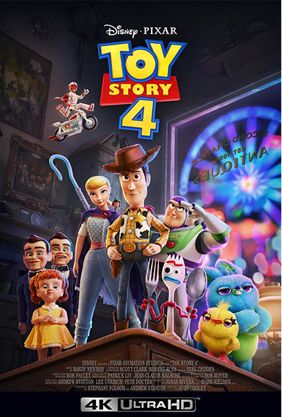
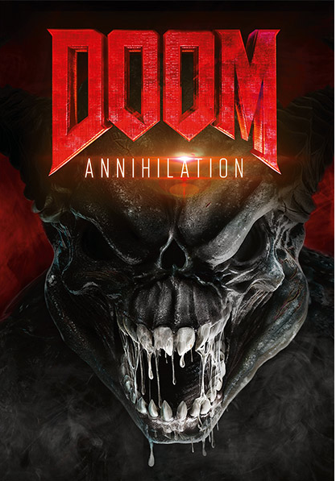

Terror
Annabelle 3: Viene a casa
Mientras están cuidando a la hija de Ed y Lorraine Warren, una adolescente y su amiga despiertan inadvertidamente al malvado espíritu atrapado en una muñeca.
El internado
Un joven queda fascinado con la identidad de su fallecida abuela y es enviado a un internado aislado para inadaptados que es manejado por un misterioso director y su esposa.
¡Critters al ataque!
Drea está trabajando de niñera cuidando a Trissy y Jake, junto con su propio hermano menor Phillip, cuando decide llevarlos a pasear para mantenerlos distraídos, sin saber que unas misteriosas criaturas extraterrestres aterrizaron y empezaron a devorar a todo ser vivo que encuentran.